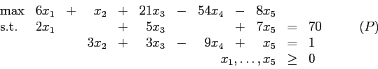
- (20 points)
Compute the dual solution corresponding to each of the following basic sets in (P):
- 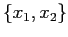
- 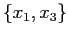
- 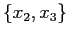
- 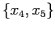
- The dual of a linear program of the form
 is of the form
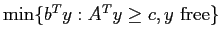.
is of the form
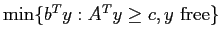.
- (6 points) Show that exactly two of the dual solutions you calculated in part (a) are feasible in the dual problem to 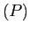.
- (7 points) Use the information you determined in part 1(b)i to find the optimal solutions to and its dual. (You may assume that any basic set not considered in part (a) is not optimal.)
- (7 points) In this part, we are going to modify the right hand side of . This does not change the dual constraints, so it does not change the dual solution corresponding to a particular basis. Specifically, let the right hand side of the first constraint be 45 and that of the second constraint be 27. How does your answer to part 1(b)ii change? (Again, you may assume that any basic set not considered in part (a) is not optimal.)
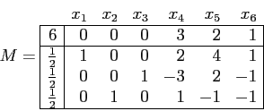
An additional constraint is now added:
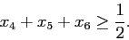
Use the dual simplex algorithm to show that the values of 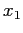, 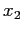, and 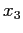 are integral in the optimal solution to the modified problem.
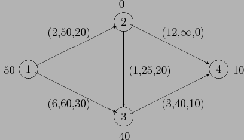
The given feasible solution is not a basic feasible solution. Find a basic feasible solution that is at least as good as the given solution.
Is your basic feasible solution optimal?
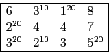
The large numbers give the costs of the arcs and the superscripts indicate a flow. This flow is a basic feasible solution.
- (7 points)
Show that the reduced costs for this basic feasible solution are as follows:
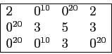
- (7 points) Currently, the cost of the arc from supply node 1 to demand node 4 is 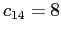. What is the smallest value of 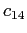 for which the given basic feasible solution is optimal?
- (7 points) Now set 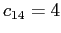. Find the optimal solution. (Hint: only one pivot is needed.)
- For this part, reset .
- (7 points) Assume the supply at node 2 and the demand at node 3 are each increased by 5 units. Use sensitivity analysis to find the change in the optimal value. (You may assume the set of optimal basic variables does not change.)
- (7 points) Now consider increasing the supply at node 2 and the demand at node 3 by units. What is the maximum value for for which the rate you found in part 4(d)i still holds? Would you expect the rate to be larger or smaller for larger values of ?